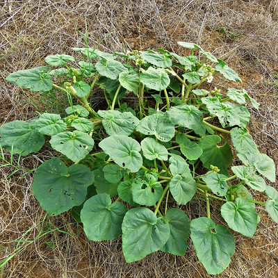
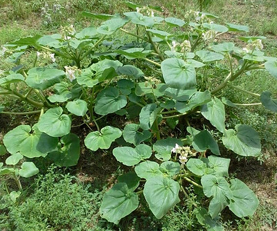
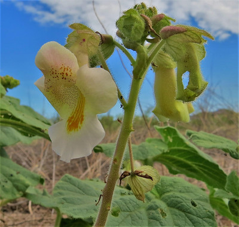
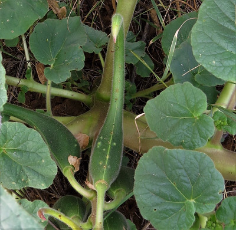
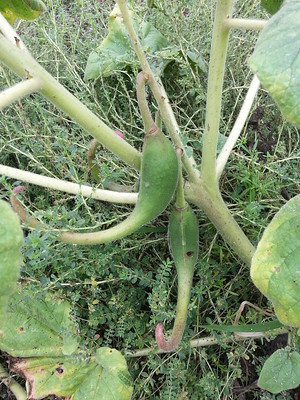
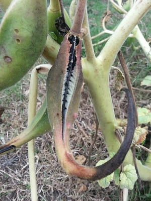
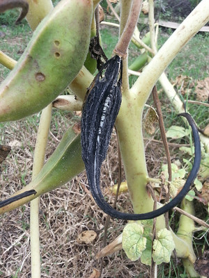

Scientific Name(s): Proboscidea altheaefolia and Proboscidea parviflora
Abundance: uncommon
What: young seed pods, seeds
How: seed pods cooked; seeds raw or cooked; seeds oil
Where: fields, disturbed soil, full sun
When: summer
Nutritional Value:
Devil's Claw plant (Proboscidea altheaefolia).


Close-up of Proboscidea altheaefolia flower.

Close-up of seedpods. Note the fine hairs on the pod.


Mature seedpod starting to split open.

Fully dried and split seedpod.

Across the sandy, arid areas of west and south Texas grows Devil's Claw...though sometimes its hooked seedpods deliver it all the way to east Texas fields, too! This large weed, practically a bush, appears after a good rain and then grows throughout the hot summer. Proboscidea parviflora is an annual which grows to maturity and then dies over the course of the summer. This annual species has pinkish flowers. The perennial is Proboscidea altheaefolia and it's flowers are yellowish-white. It may die back in the winter but then returns from its deep, thick taproot. The leaves of both species are heart-shaped, have sticky surfaces, and smell bad. Mature seedpods can reach fifteen inches in lengths. Seeds are black in color but a white-seeded variety was also grown by Native Americans. The pods split into two or sometimes three sections when mature.
The young, tender pods are cooked (boiled, steamed, or fried) before eating...but frying them like okra is the best. Boiled or steamed Devil's Claw pods are kind of an...acquired taste. If they are starting to get tough just leave them on the plant until the pod matures. This is indicated by the pod turning hard, brown/black in color, and beginning to split. At this point collect the seeds. They can be eaten raw but roasting them first improves the flavor. Once roasted they can be boiled as a porridge or ground into a gluten-free flour.
The fibers of the mature seedpods were prized for weaving baskets.